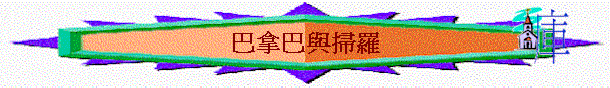

引言：
上一次我們從約拿單與大衛的事蹟中，學習肢體之間應有的情誼，而在你的學校或團契生活中，有沒有好朋友/好弟兄/好姊妹？他/她有甚麼地方是你所欣賞的？
今日我們再看另一對人物：巴拿巴與掃羅，看看他們之間如何相處，從而教導、提醒我們肢體相交之道。
一.初次認識(徒9:26-28)
1.從徒9:1-2,11,13-14中講出掃羅(後來叫保羅)是誰？
你認為他是好人/壞人/極壞的人？ 何以見得？
有甚麼不好的地方？
2.試看徒9:3-9,20-22，掃羅遇到甚麼特別經歷？ 有甚麼改變？
3.正常來說，若一個曾經殘害教會的人，突然來到信徒中間，說自己已改變，一般人對他會有甚麼聯想或感覺？
4.在你認識的群體中，有沒有一些同學你定了他的形像，是不好的，有「睇你都不會改變」「睇死你」的感覺？ 為何有這看法？
5.
我們又看另一個人物----巴拿巴，他是誰？(徒4:36-37,11:24)
6.試看一看
徒9:26-28，掃羅來到耶路撒冷作甚麼？你認為巴拿巴是否知道掃羅已有改變？何而見得？
7.巴拿巴見到掃羅後，他有甚麼反應與行動？ 和其他門徒有甚麼不同的地方？
有甚麼得我們欣賞與效法？
8.在群體相處中，有沒有試過被人不信任或label或不與你結交的經歷？
你有甚麼感受？
到甚麼功課？
9.巴拿巴的愛心是否單停留於信任對方呢？ 還有甚麼行動值得我們效法？
10.在團契生活中，通常是誰負責接待新朋友？ 你在接待新朋友/團友上，有沒有難處或學習如何？
二.一同作工(徒11:19-26)
1.巴拿巴在安提阿教會中作了甚麼工作，是否有好效果？ 你認為巴拿巴是否一個能幹的人？
2.一個這麼能幹及有事奉果效、恩賜的人，是否單一個人事奉已可以，不需同路人支持？ 何以見得？
3.
在你的信仰路上，有否一段日子，覺得一個人走天路，獨立追求已可以？
又有否一段日子，心�堹u渴慕有同路人支持，感覺原來我真是需要肢體？ 試分享
4.試從徒11:25-26,14:11-23中，看看巴拿巴與保羅同心作了甚麼工作？
5.試想一想，3年後的團契之憧景，若我們一同同心做甚麼事情，就好得無比？
每人分享一樣，你又渴慕自己可以有甚麼參與與付出？
6.後期的使徒行傳，將原本巴拿巴與掃羅的寫法，多寫為保羅與巴拿巴，記載保羅的事蹟
比巴拿巴更多，若巴拿巴是軟弱的人，他會有甚麼不好的想法？
7.在肢體生活中，你認為「嫉妒」、「比較」、「不忿氣」的情況會不會在你身上發生？
後來
如何面對？
總結：從巴拿巴與掃羅的認識與一同作工經歷中，我們學到甚麼功課？你最想學習的是甚麼？